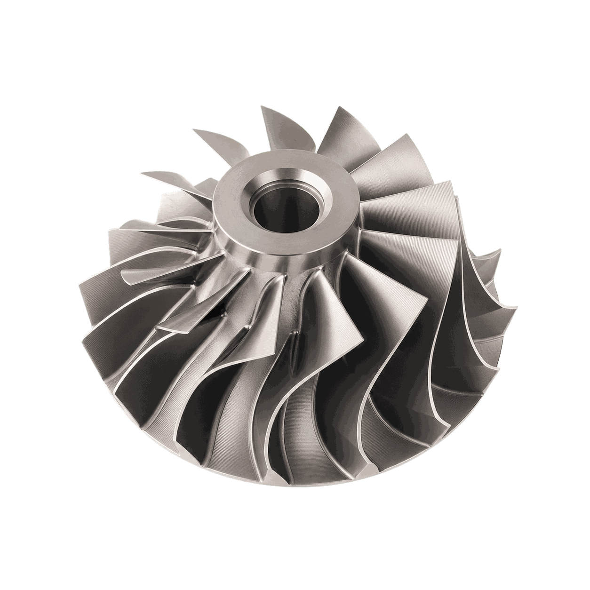
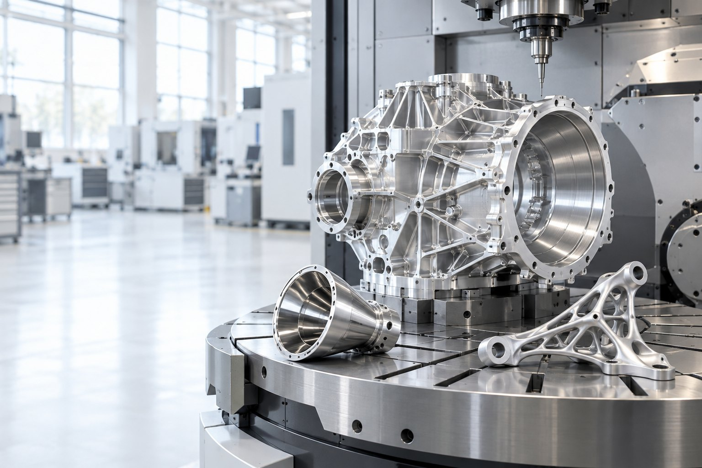
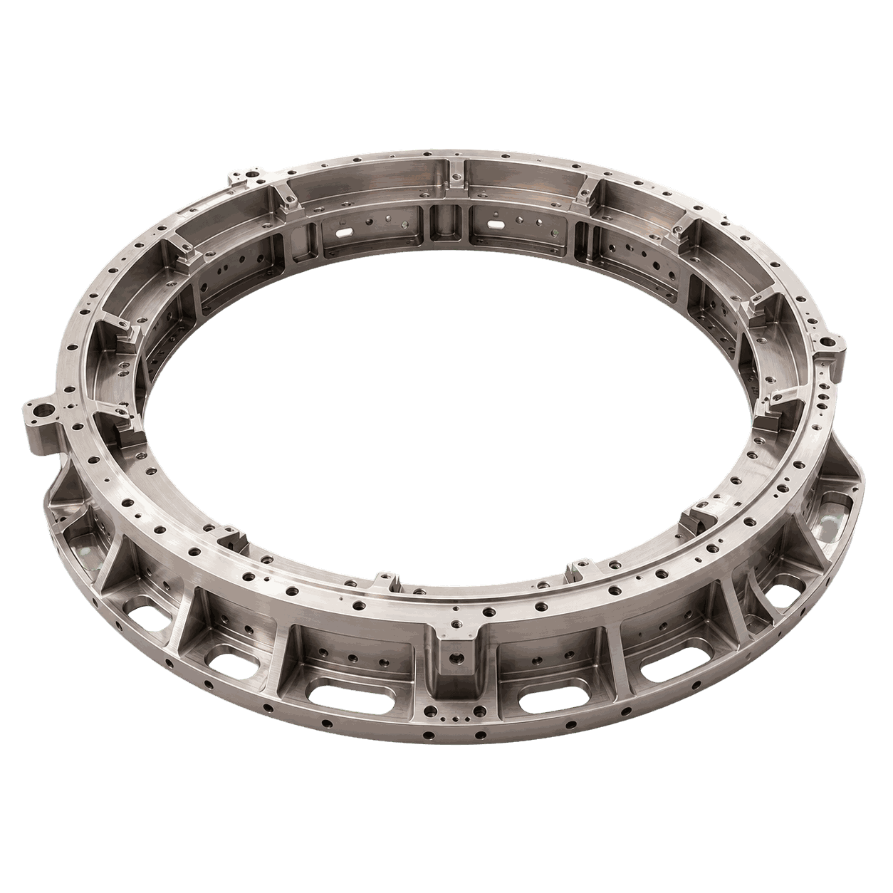
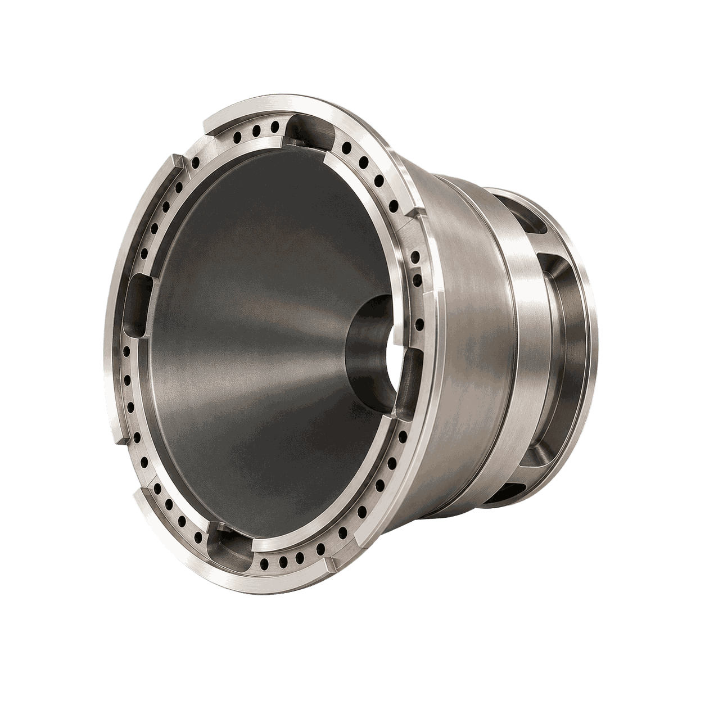
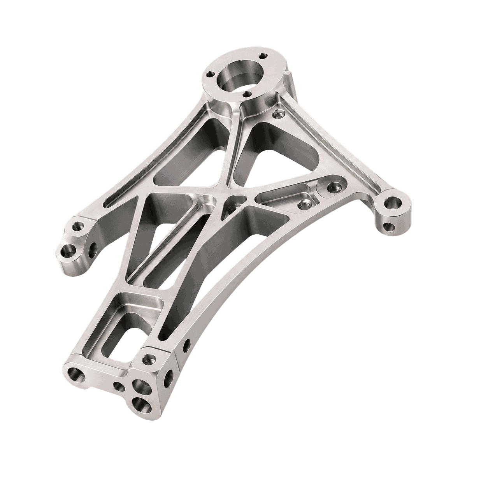
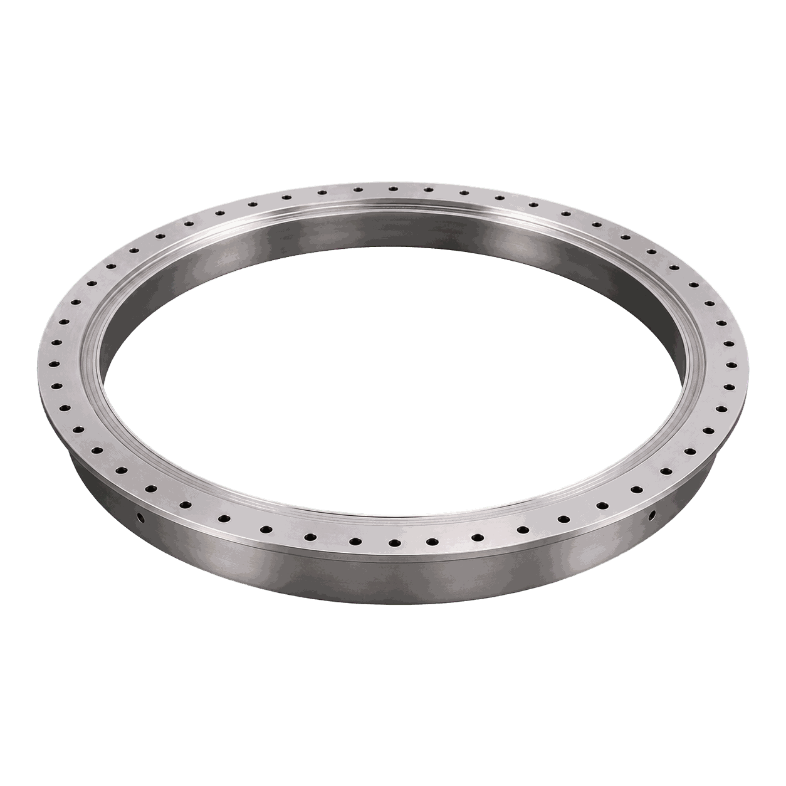

Крыльчатка насоса
Технологическая задача
Обработать сложный профиль детали «Крыльчатка насоса» с выдерживанием формы лопаток, посадок и балансировочных баз.

Решения для точных корпусных и силовых деталей космической техники: лёгкие сплавы, сложная геометрия, стабильное базирование и контроль.

Обработать сложный профиль детали «Крыльчатка насоса» с выдерживанием формы лопаток, посадок и балансировочных баз.

Сформировать базовые плоскости, контуры и отверстия детали «Шпангоут» без потери геометрии на крупной заготовке.

Построить маршрут обработки детали «Сопловой вкладыш» с понятным разделением операций и подбором оборудования под каждую операцию.

Обеспечить точность базовых плоскостей, посадочных отверстий и сопрягаемых поверхностей детали «Прецизионный корпус».

Построить маршрут обработки детали «Кронштейн» с понятным разделением операций и подбором оборудования под каждую операцию.

Построить маршрут обработки детали «Фланец бака» с понятным разделением операций и подбором оборудования под каждую операцию.
Реальные запуски оборудования на производствах: что поставили, как вводили в эксплуатацию, что получил заказчик.
 Внедрения · 01.07.2026Плоскошлифовальный станок для обработки деталей с высокой точностьюЧитать →
Внедрения · 01.07.2026Плоскошлифовальный станок для обработки деталей с высокой точностьюЧитать → Внедрения · 26.07.2026Запуск вертикального обрабатывающего центра: чек-лист ввода в эксплуатациюЧитать →
Внедрения · 26.07.2026Запуск вертикального обрабатывающего центра: чек-лист ввода в эксплуатациюЧитать → Внедрения · 12.05.2026Запуск круглошлифовального станка: от базовой настройки до контроляЧитать →
Внедрения · 12.05.2026Запуск круглошлифовального станка: от базовой настройки до контроляЧитать →Как проходит проект от чертежа до серии — шесть шагов. Нужен участок целиком — комплексное оснащение.
Детали космической техники делают из лёгких и жаропрочных сплавов с минимальной массой и жёстким допуском на геометрию: шпангоуты и силовые кронштейны, прецизионные корпуса приборов и агрегатов, фланцы баков, сопловые вкладыши, крыльчатки турбонасосов. Серии единичные и мелкие, но каждая деталь проходит измерительный контроль, поэтому главное требование к станку — стабильность геометрии от установа к установу и возможность контроля на станке.
Механит подбирает оборудование под конкретную деталь: технолог берёт чертёж, материал и требования к контролю, считает маршрут и предлагает станок с измерительной оснасткой. Возможна тестовая обработка детали заказчика с протоколом измерений. Пусконаладка на площадке, инструктаж операторов, гарантия от 12 месяцев, выезд инженера за 1–2 рабочих дня — раздел «Сервис».
Пришлите чертёж и требования — технолог Механита разберёт задачу, составит маршрут обработки и подберёт станок под вашу программу выпуска.
Предварительный анализ — без оплаты.